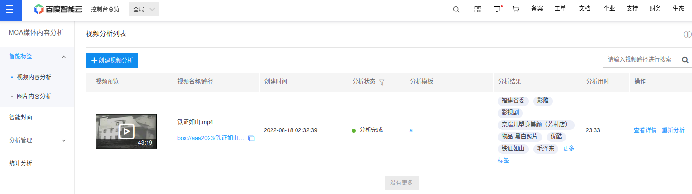
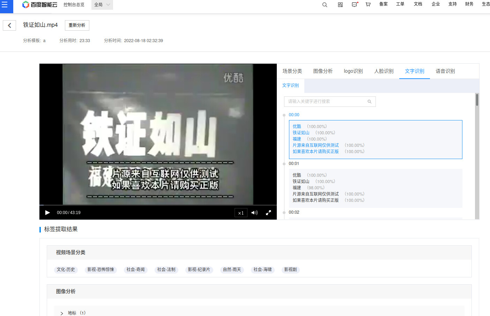

由百度智能雲協力：


00:07-00:14
本片是在中共福建省委福州新区党委的直接领导下拍摄的，
00:15-00:26
他揭露了四人帮及其在福建的心境陈家忠郑重庄恒李庆龄别帮探党扶避资本主义的滔天罪行，
00:27-00:39
反映了四人帮垮台后全省居民紧跟英明领袖华主席贯彻落实抓纲治国的伟大战略决策团结战斗乘胜前进的，
00:40-00:42
大好形势，
00:58-01:05
万里海江欢声雷动，
01:06-01:20
福建军民心花怒放，
02:22-02:32
话住迪亚全国人民无比信赖你你将儿女无限热爱您，
02:33-02:46
颗颗红星飞向北京城学生好接班人是我们党的好领袖福建前线军民衷心爱戴您，
02:57-03:10
万恶的四人帮是由一伙辛劳反革命结成的黑帮他们搞修正主义搞分裂搞阴谋诡计妄图篡夺党和国家的最高领导权，
03:11-03:23
四人帮还直接插手福建疯狂的进行破坏和捣乱借据福建省委常委省州委会副主任药师的参加中，
03:24-03:35
由张春桥提名推进省委常委会的郑重打上省管委会副主任高位的双志成，
03:36-03:49
招摇撞骗混进世界人大常委会的李庆林他们是四人帮在福建的四个亲戚他们卖身投靠四人帮捷邦隐私分裂，
03:50-04:00
省委以及参与了四人帮串党夺权的阴谋活动，
04:03-04:13
陈政庄李从王张江姚上下勾结狼狈为奸他们送黑材料告黑状，
04:14-04:20
给王张姜瑶提供向党进攻的炮弹这是姚文元的亲笔批示，
04:21-04:30
王洪文收到陈家忠送去的黑材料后叫人转告陈硕材料收到了要保密任何人都不能讲，
04:31-04:37
王洪文还打听陈家忠在不在上海想亲自接见他以资鼓励，
04:38-04:45
江青说我很荣幸的认识陈家忠同志，
04:46-04:54
李庆林的皇教我有天线中央斗争很激烈我不找他们我找江青，
04:55-05:07
这是一九七六年二月在中央打招呼会议上陈家忠的亲笔记录括弧中的一段话表现了陈家中受宠若惊的奴才相，
05:08-05:20
据陈家忠供认在他发言时王洪文不断插话煽风点火拼命鼓动他在会上放炮向党进攻，
05:23-05:38
他们丧心病狂的反对敬爱的周总理把群众沉重悼念周总理的革命标语作为反动标语进行搜集把矛头指向伟大领袖毛主席和党中央，
05:39-05:48
他们炮制了一个反革命行动纲领打出王牌突破莆田扰乱阵容改组省委，
05:49-05:53
有纲领有组织有步骤的阴谋篡党夺权，
05:54-06:01
他们叫嚣省委班子走资派不避势力占绝对优势，
06:03-06:11
有投降派两面派还有中间派还有廖马林这样的要派，
06:12-06:23
他们得意忘形的宣称现在省委权力中心转移到我们的手里了现在我们在台上，
06:24-06:33
这是陈家忠的自贡状，
06:34-06:40
王洪文对他面授机宜因谋把福建省委领导同志打成走资派和投降派，
06:41-06:52
陈家忠还掏出江青的黑话污蔑福建省委主要负责人涂炭人民却走资派还在走，
06:53-06:59
李庆龄胡说什么要查一查省委的第一把交椅有没有让宋大哥坐去了，
07:00-07:12
他们制造谣言大声黑材料恶毒攻击福建前线三军主要负责同志要揪什么走私派的黑后台闽赣两省的太上皇，
07:13-07:16
反党论军妄图毁我长城，
07:17-07:23
正中校长中央省地建设大队都有走私派，
07:24-07:31
他们秘密策划游到福建省委第一书记陈家忠却说这是健康正常的，
07:32-07:46
惠安县所谓县委全委会擅自开除县委书记和常委更不愿其常委夺了县委的权陈家忠称赞说好的很我们坚决支持你们，
07:47-07:54
还颠倒是非胡说什么你们大批判搞得好社会治安好资本主义不断被抓住，
07:55-08:02
在他们反革命山洞下莆田地区一百二十一个工程瘫痪了八十八个，
08:03-08:08
宁德县委副书记毕婉艳同志竟被坏人活活的折磨死，
08:09-08:12
莆田地区派出所瘫痪了二十八个，
08:14-08:22
永泰县公安局局长孙兴富同志因反对强制释放在押犯竟被暴徒打伤，
08:29-08:41
为了抢班夺权他们大搞突击提干突击入党莆田晋江两个地区突击提干三千八百多名突击入党三千二百多名，
08:43-08:50
他们搞什么纳新纳派持枪压阵先当书记后做党员，
08:51-08:59
不择手段的把坏人拉进了党内妄图改变我们党的无产阶级性质颠覆无产阶级专政，
09:00-09:09
杀人反复释来被强制释放后居然也突击入了党，
09:16-09:24
福建省莆田晋江两个地区面对台湾金门等岛屿是海航前线的战略要地，
09:25-09:33
四人帮在福建的亲信也懂得这一点直接插手这两个地区造成了十分严重的反革命扶贫局面，
09:38-09:51
他们常常成立什么运动班国王宣布一切权力归运动班夺了达瓦，
09:54-10:03
现在看一看莆田涵江公社的运动办干了些什么勾当，
10:04-10:10
到处设立武斗据点垒碉堡攻势明枪暗眼，
10:14-10:25
拉电网杀气腾腾戒备森严，
10:26-10:39
他们砸开公社武装部的武器库夺走枪支弹药日夜乱鸣枪制造法西斯恐怖群众称他为，
10:40-10:44
座山雕的飞虎天黄江团的阎王殿，
11:04-11:14
对方匪徒还把房子打通搞所谓地道战，
11:20-11:30
他们大搞大砸抢撬开公社办公室抢走公物大肆挥霍国家资财，
11:42-11:50
这些暴徒对无产阶级专政恨之入骨，
11:51-11:57
日益抢走捣毁人事档案公安档案激励文件和财务账目，
11:58-12:04
这并不奇怪韩江运动版本来就是由一些牛鬼蛇神跳鬼渣子拼凑起来的，
12:05-12:09
他们对社会主义怀有刻骨仇恨时刻梦想复辟，
12:11-12:21
一九七六年十月十八日就在这里他们突然开枪打死我解放军战士吴庆军同志，
12:22-12:34
他们枪口对着谁对谁实行专政他们又欠下了人民的一笔巨债，
12:35-12:40
江口共社的一小头坏人也在大搞武斗，
12:42-12:49
这里是明调暗堡枪眼密布，
12:50-12:55
天桥凌空电网林立，
12:57-13:10
他们疯狂的反对红色政权竟敢摘掉公社党委会高委会的牌子在公社机关内阴森森的写着有来犯者棺材自备的恐吓标语，
13:14-13:36
一九七六年十月十九日宁夏中农扬眉吐气的到这里来，
13:37-13:44
暴徒们竟丧心病狂开枪打死当天标语的评价中有三人打伤六人，
13:45-13:48
又制造了一起严重的反革命政治事件，
14:06-14:17
这是仙游县凤山和摄影的山头武斗攻势一小头坏人控制制高点和要道强占了公社，
14:31-14:39
四人帮及其在福建的亲戚破坏民兵建设大搞第二武装疯狂的打砸抢，
14:40-15:04
这是莆田县收缴的被非法抢夺的一部分武器这是泉州市收缴的非法资制造的一部分武器，
15:06-15:19
坏人当道人民遭殃韩江公社妇联主任军属刘金英愤怒地控诉，
15:20-15:27
对于我现在的意见始理不理只是一批暴徒将我家赔偿，
15:28-15:30
天大的一干二净，
15:31-15:38
国民党必修房想干呃无法干的坏事他们干出来了，
15:39-15:46
我是一个普通干部天下就能定熟我到底犯了什么罪，
15:47-15:50
他们如此坎坷和爱我，
15:51-15:58
他们是黄江团携带累累坐如滔天群众说，
15:59-16:09
运动棒是防冻棒头盔棒我是深有体会的美丽富饶的乌鱼岛横刀继节，
16:10-16:24
医生资产阶级分子朱赞成被强制释放后对过去和他做过斗争的无为党干部群众疯狂的进行阶级报复对无为党大搞大干强，
16:25-16:39
这是共产党员大队会计王少义的家贵重物品全被抢光别的东西统统砸烂在废墟中幸免于难的只有这只调羹和一个小，
16:52-17:12
深受其害的何止王少义一家社员王友芬他家里的锅灶床铺和日用品被砸的鸡巴烂连房顶也被掀掉，
17:13-17:28
这个小岛有二百多人被赶出家门无家可归就是有家的也不敢归无遇岛，
17:38-18:06
从江青到陈家中一伙儿意污蔑福建省委主要领导人涂炭福建人民请看涂炭福建人民的道，
18:07-18:12
你是谁，
18:13-18:24
莆田城郊公社贫农陈金凯的控诉吧，
18:25-18:37
一九七六年十月二十二日他从群众一道钢铁打倒四人帮的大子弹竟遭到武道队报徒们的迫害被杀了家，
18:38-18:49
抢走了现金搞毁了家具这帮匪徒还扬言要花他两千元作为武道的拜劳费，
18:58-19:23
惠安县被陈家中鼓吹为社会治安好的样板县这个县的山腰公社被坏人篡夺了领导权他们私设监狱关押了几多无辜的干部和群众使用各种骇人听闻的刑法，
19:41-19:54
从这个黑样板中人们可以亲眼看到四人帮所要建立的就是这样的法西斯专政，
19:55-20:10
现有县宝丰大队党支部书记方瑞众是个坚持走社会主义道路的好带头人，
20:11-20:20
但是被扣上了反革命的罪名关进了监狱无产阶级硬骨头方位重横眉冷对坚持战斗，
20:21-20:28
他在狱中写信给队里干部说我个人受点委屈没关系我们要牢记毛主席的教导，
20:29-20:36
只有社会主义才能救中国我们可以在任何情况下要制止分田单干，
20:37-20:54
四人帮的黑手伸到哪里哪里资本主义就泛滥成灾，
20:55-21:15
仙游县百分之六十多的土地被分到各户单干这一家贫农社员却把劳动力连六七岁的娃，
21:16-21:30
也要上天割到，
21:31-21:41
本田单干造成了农业生产的严重破坏仙游县社平公测一天多么晚到有八百多亩颗粒无收，
21:42-21:50
大片大片的田地荒废了变成了放牧场，
21:51-21:57
婚前单干带来了贫富两极分化胡杨大队贫农正日夜，
21:58-22:12
分了两藕三分地晚季只收稻谷一百九十六斤以往集体生产时每年可分到一千六百多斤他对走社会主义道路多么向往，
22:13-22:35
全都是逻辑公社贫农黄镇一家五口人分了一亩一分地由于分田单干造成生活极端的贫困老婆被迫自杀了最小的孩子也饿死了，
22:36-22:45
这一把锄头一把铁把就是他家里唯一贵重的财产同志啊，
22:46-22:59
什么叫资本主义复辟四海横行的热果是什么请看看皇帝御家的悲惨遭遇吧，
23:00-23:09
李庆林这个自封的限制资产阶级法权的先锋战士大搞特权盖起了价值万元的小楼房，
23:12-23:17
这是他非法占用的小轿车六支手枪，
23:18-23:29
四套民警服他的一个保镖是个罐头竟穿上了民警服这个礼拜天为了庆祝自己的生日在现场里大闹了三天三夜，
23:30-23:41
新生资产阶级分子陈振标原福清县管委会副主任他利用职权贪污勒索接受贿赂共达一万六千多元，
23:48-24:01
他靠挖社会主义墙角过着骄奢淫逸的生活这个暴发户从黄震一家的生活形成了多么鲜明的对比，
24:07-24:19
牺牲资产阶级分子朱赞成原泉州城东公社党委书记这个洗劫乌鱼岛的首犯依仗四人帮做靠山无恶不作，
24:20-24:23
洗干人民的血汗盖起了小楼房，
24:24-24:31
资源帮推行的反革命修炼主义极有路线不正是代表地部反坏和新老资产阶级的利益吗？
24:33-24:54
一九七六年仙游县乱砍滥伐山林破坏严重骇人听闻全县山木细存量二十九万立方米几个月中被强砍了十八万立方米严重的破坏了国家资源，
25:01-25:11
两千个大小山头被剃光了昔日一望无际的绿色森林，
25:12-25:24
如今只留下了杂乱的树根过去被称为绿色金库的七碗大队共有四万五千亩杉木林这一次，
25:25-25:31
从幼林到上千年的贵重木材全被砍光，
25:32-25:41
这颗一千多年的天山也遭此命运，
25:55-26:06
摄影公社不但山林看光了就连锅炉上的电线杆儿也被拦腰锯掉，
26:07-26:23
这是仙游县木材投机倒把市场每天有数百人进行黑市交易像这样的木材市场仙游县就有五六处，
26:42-26:54
晋江的翔知旺季每天捕鱼量达十几万斤每天渔船一靠岸就有成千人去到海边进行黑市交易，
27:06-27:15
捕来的鱼全被投机倒把份子二盘香买走看到自由市场高价卖出谋取暴利，
27:19-27:35
陈家中正中一火不是叫让暖风不久就要从闽南吹到闽北吗这股暖风究竟是什么风看一看时时在上的情景就不言而喻了，
27:40-27:51
晋江石狮镇以资本主义泛滥闻名福建全省这个镇上每天设摊买卖的有九百九十三摊，
27:52-28:00
资本达六十多万元，
28:10-28:26
市场上有日用百货布批药品高级烟酒粮油化肥和各种鱼肉类等等，
28:27-28:35
大的投机商设有地下黑工厂地下粮油化肥各种仓库五花八门无奇不有，
28:36-28:46
这就是张春桥给鼓吹的乱一点儿生气勃勃这就是陈家沟一伙儿高喊的晋江形势大好，
28:47-28:53
这就是正宗教养的闽南一股暖风，
29:13-29:29
在这股所谓暖风吹过的地方黑市买卖不公剥削流氓诈骗偷影黑记贩卖票证聚众赌博乌七八糟臭气冲天，
29:43-29:55
福建晋江一些地区封建迷信成风算命卜卦，
29:56-30:00
巫婆神棍，
30:01-30:07
贩卖迷信品，
30:15-30:37
求神拜佛等迷信活动十分猖獗许多地方不但修复了旧庙还明目张胆的盖起了庙宇和祠堂这是什么关帝庙整天供神记鬼磕头烧香烟雾腾腾闹得乌烟瘴气，
30:46-31:03
还有什么圣母庙城隍庙土地庙光是仙游县修建的庙宇就有六百七十六座，
31:04-31:17
大地公社东顶大队新盖了一座庙宇花了一万多元打办九级一百多桌闹了一天一夜这些早被历史淘汰的封建渣子，
31:18-31:29
要唱的灿烂起来使人帮积极推进趁党夺权阴谋不避罪恶累累铁证如山，
31:41-31:56
期待了乌云阳光更灿烂铲除了四害八明大地换今天，
32:10-32:12
好各位赶紧去排队赶紧赶紧赶紧赶紧赶紧赶紧赶，
32:13-32:29
中央中建前线部队坚决执行以话主席为首的党中央指示派出大批宣传队群众工作队迁入城镇乡村从当地广大干部群众团结战斗乘胜前进，
32:52-33:00
家乱四人帮人民喜洋洋无产阶级硬骨头，
33:24-33:34
人民子弟兵热情宣传华主席的伟大贡献把华主席党中央的关怀做到千家万户，
34:03-34:15
华主席派来的亲人帮助遭受四人帮严重破坏地区的群众修建房屋重建家园恢复生产，
34:32-34:45
广大群众义愤填膺仇恨满，
34:46-35:08
很正常千愁万恨只叫万恶的四人帮四人帮害的我们国无宁日民无宁日四人帮大搞反革命复辟罪恶累累铁证如山一桩桩一件件必须彻底清查，
35:12-35:14
二刀向前，
35:30-35:40
福建城建居民对四人帮的仇恨烈火越烧越旺又将火山爆发怒火万丈，
35:46-36:04
福田工农兵群众愤怒声讨四人帮积极亲近李庆林大搞篡党夺权阴谋活动的惨重罪行，
36:20-36:29
祸国殃民的四人帮及其亲戚陷入了人民战争的汪洋大海之中，
36:30-36:38
老贫农软件受愤怒控诉李建林攻击省地县领导是团江团，
36:39-36:53
到底谁是还乡团土改我分了地主的房子去年地主亲属在李建林一伙的支持下带领打手抢占了我的房子殴打我还要我吃屎，
36:54-37:04
我被迫流浪跌倒搞反攻倒转的正是李庆林这伙人他们才是货真价实的还乡团，
37:36-37:50
狠决胜劈四人帮坚决镇压反革命四人帮积极推进包庇纵容和支持的一小条反革命分子受到了无产阶级的坚持打击，
38:03-38:05
打到张春秋，
38:06-38:08
拿到信息，
38:19-38:31
打倒四人帮福建有希望革命先去浪生产，
38:32-38:40
看跌跌涨农业学大寨普及大寨建的革命热潮一浪高过一浪，
38:49-39:06
看今日武夷山下红旗漫卷云出飞落铁地摇到处摆开了战天斗地的战场，
39:07-39:20
广大贫下中农意气奋发豪情满怀的说毛主席号召我们学大寨跨主席率领我们学大寨我们前程似锦步伐坚定，
40:21-40:33
福建工人豪迈的提出一定要把四人帮破坏的损失夺回来跨主席热烈赞扬了这种革命精神跨主席的鼓励，
40:34-40:39
给福建工人阶级以巨大的鼓舞，
41:02-41:11
广大工人群众你对我感觉大庆出大力，
41:12-41:19
刘大汉为普及大庆市企业推动国民经济的新跃进多做贡献，
41:46-41:59
福建前线三军和民兵铭记华主席视察厦门前线时的亲切指示你们担负的任务无比光荣重大，
42:00-42:09
要提高警惕加强战备他们决心把华主席的教导化为乘胜前进的巨大力量，
42:10-42:16
提高警惕加强战备一定要解放台湾完成统一中国的大业，
42:24-42:37
让我们高举毛主席的伟大旗帜在以华主席为首的党中央领导下把阶梯四人帮的伟大斗争进行到底为实现抓党治国的战略决策，
42:38-42:39
团结战斗，
42:40-42:47
我们一定要胜利我们一定能够胜利，
{kind=link}
{kind=link}
{kind=link}